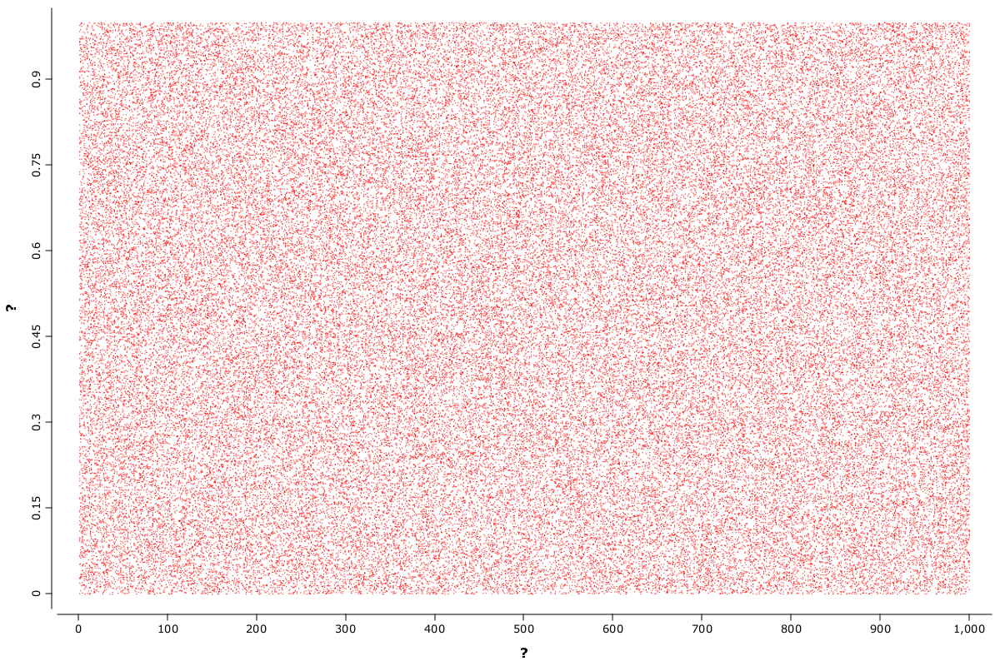

NP binomial
%load ../rapaio-bootstrap
RandomSource.setSeed(42)
// Wilson
private static double center(double phat, double z, double n) {
return (phat + z * z / (2 * n)) / (1 + z * z / n);
}
private static double delta(double phat, double z, double n) {
return z / (1 + z * z / n) * Math.sqrt(phat * (1 - phat) / n + z * z / (4 * n * n));
}
public static double lbound(double q, double k, double n) {
double z = Normal.std().quantile(q);
double phat = k / n;
return center(phat, z, n) - delta(phat, z, n);
}
public static double ubound(double q, double k, double n) {
double z = Normal.std().quantile(q);
double phat = k / n;
return center(phat, z, n) + delta(phat, z, n);
}
int N = 100_000
int NMAX = 1000
VarInt ns = VarInt.from(N, row -> RandomSource.nextInt(NMAX)+1)
VarDouble ps = VarDouble.from(N, row -> RandomSource.nextDouble())/
VarDouble xs = VarDouble.from(N, i -> Binomial.of(ps.getDouble(i), ns.getInt(i)).sampleNext())
VarDouble phat = VarDouble.from(N, i -> xs.getDouble(i)/ns.getDouble(i))
WS.image(points(ns, ps, sz(0.2), color('r')), 1200, 800)

VarDouble lbound = VarDouble.from(N, i -> lbound(0.95, xs.getDouble(i), ns.getDouble(i)))
double t = 0.04
var confusion = Confusion.from(VarNominal.from(N, i -> ps.getDouble(i)>t ? "1" : "0"), VarNominal.from(N, i -> lbound.getDouble(i)>t ? "1" : "0"))
confusion.printString()
ConfusionMatrix(levels:?,1,0)
Confusion method(double t, double q) {
VarDouble lbound = VarDouble.from(N, i -> lbound(q, xs.getDouble(i), ns.getDouble(i)));
var confusion = Confusion.from(VarNominal.from(N, i -> ps.getDouble(i)>t ? "1" : "0"), VarNominal.from(N, i -> lbound.getDouble(i)>t ? "1" : "0"));
return confusion;
}
method(0.04,0.5).precision()
0.9960055211644637
method(0.04,0.5).recall()
0.9923839093153853
method(0.5,0.5).printSummary()
> Confusion matrix
- Frequency table
Ac\Pr | 1 0 | total
----- | - - | -----
1 | >48,890 1,257 | 50,147
0 | 1,125 >48,728 | 49,853
----- | - - | -----
total | 50,015 49,985 | 100,000
- Probability table
Ac\Pr | 1 0 | total
----- | - - | -----
1 | >0.489 0.013 | 0.501
0 | 0.011 >0.487 | 0.499
----- | - - | -----
total | 0.500 0.500 | 1.000
Complete cases 100000 from 100000
Acc: 0.97618 (Accuracy )
F1: 0.9762185 (F1 score / F-measure)
MCC: 0.9523633 (Matthew correlation coefficient)
Pre: 0.9775067 (Precision)
Rec: 0.9749337 (Recall)
G: 0.9762194 (G-measure)